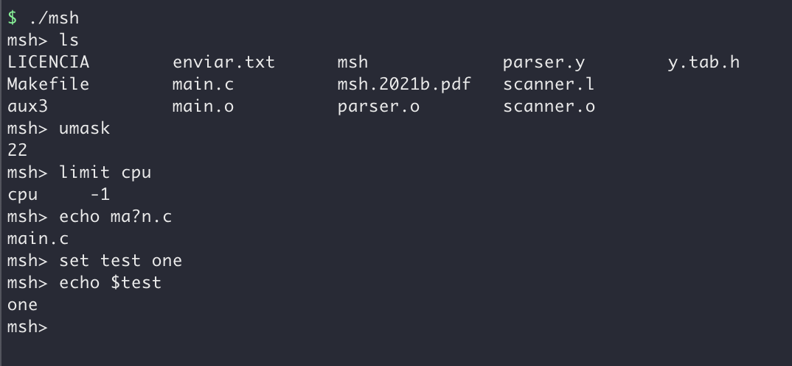

Alvaro Alonso
My portfolio
-
Email
alonso.miguel.alvaro1@gmail.com
-
Phone
+34 661 140 420
SpanishMangaPublishingTracker
Python, Requests
Spring 2023
GitHubThis Python script is designed to provide users with information on manga books published in Spain, as well as their monthly releases. The script displays a user-friendly menu on the terminal, allowing users to easily navigate through the various options available. The script utilizes an internal database containing book IDs, making it quick and easy to find the latest releases of a given title. With its intuitive interface and up-to-date information, this script is a valuable resource for manga fans in Spain.
Reactify
React, Dynamic Web, Spotify API
Winter 2022
GitHubDeveloped a web page that integrates with the Spotify API to display users data, top tracks, and more. Implemented dynamic components that update in-real time based on user interactions or played music. Designed an intuitive and responsive user interface that maximises user engagement and satisfaction.


Ecomobility
Semantic Web, Linked Data, Ontologies
Autumn 2022
GitHubCreated a web that uses public csv's to display data from bike stations and charging points of Madrid. Cleaned original data with OpenRefine and created RML mappings used to publish data on new RDFs. Designed a user interface which helps the user find all these points and information on a dynamic map.
Figbot
AI, Java & Rest Services
Summer 2022
GitHubCrated a multi-agent intelligent system that helps a streamer with the modding labour of a twitch chat. Developed a GUI to register the decisions made so the streamer and mods can review them at any time. Achieved to ban with a words blacklist and timeout users by analysing the percentage of bad language.
Sokoban
Java & XML
Spring 2022
GitHubEmulated the Sokoban game using the model-view-controller pattern with shortcuts and level creation. Made use of xml files to save the status of levels making possible to have simultaneous games to load. Optimized the development by making use of the SCRUM methodology and Maven for version control
Data Center
Research Work
Winter 2022
PDFAs a group we developed a full data center from scratch, as part of a subject from college. We created the racks oriented to an online video editting platform so they needed to be very powerful. This leaded to a future problem because they gave off so much heat and needed so much power there weren't available pieces to cover this.
In the pdf available to download you could see the full paper (in spanish) and watch all the designs we created for the data center, racks, electricity, air flows, ...
GeoCaching
API Java Rest Services
Winter 2021/22
Developed a Rest API for a clone of GeoCaching. Included two resources, users and treasures. The user resource can add a user, get users data, add friends, list friends,it can found treasures and be the creator of treasures. In the treasure resource are made the operations related with the information of the treasures, edit, delete and add new treasures.
Distributed Systems Broker
C
Winter 2021/22
Implemented a broker and a client for a distributed system which lets the users list all the available themes, subscribe and unsuscribe to those themes, show users subscribed to a theme, publish into the themes, receive messges from multiple themes because they get queued and save them into files. Also the system let the users close the client and resume their session with the themes they were subscribed. Also some filters are availabele for a better experience while listing the attributes.
Bank Fraud Detection Middleware
Java JMS
Winter 2021/22
Created a software system that helped to fight fraudulent transactions on banks from different regions. Made use of hash tables, queues, and sorting algorithms to minimise the complexity of the system. Designed a middleware system to avoid fraud transactions between servers making use of concurrency.
Newspaper App
Android (Java)
Winter 2021
GitHubCreated an app for Android which connects to a server that can upload, edit and download articles. Made a login system that allows the user to edit his own articles or create new ones, once is logged. Achieved a notification system that alerts users if new articles are uploaded since the app was closed.
Personal Shell
C & Bash
Winter 2021
Designed a shell trying to replicate some Bash commands to understand how they are implemented. Made a parser and a scanner to read from the console and interpret each command for his processing. Optimised the computational complexity creating structures and using multiple threads and processes.
Kiev Underground Map
Python
Autumn 2021
GitHubWanted to create an underground map which shows the user the best way to travel between two stops. Made use of a graphical interface to let the client select the stops and go back or repeat the selection. Achieved the best travel time making use of an heuristic algorithm to return the fastest selected path.
Sudoku Solver
Java
Autumn 2021
Developed a sudoku solver making use of dynamic programming to avoid repeating same search paths. Made use of objects to save the intermedium states and recursion to analyse and search each branch. Capable of solve 4x4 boards in the fastest time based on difficulty achieving the first possible solution.
Personal Compiler
Java
Summer 2021
GitHubDesigned a compiler for a simpler copy of Javascript that avoids errors coming from the input received. Made three different analysers for each part of the compilation process and defined the symbols table. Optimised the analysis by stoping the process when an error is detected or warning only if is possible.
Snake Game
Python
Summer 2021
Created the snake game which consists of creating the biggest snake possible without biting yourself. Made fruits to appear random so each time the game is slightly different and with time gets harder. Achieved a playable game based on the knowledge I achieved in python with graphical user interface.
Bank Accounts Software
Java
Spring 2021
Created a software system that helped with account management in banks with different structures. Made use of hash tables, queues, and sorting algorithms to minimise the complexity of the system. Designed a concurrent system to allow creation of multiple accounts and transactions between them.
Series Database and Interface
Java and SQL
Spring 2021
Designed a cmd interface which allows users to research for series by seasons, actors and languages . Made a profile system for the users so they can have their favourite series and friends inside the app. Optimised the database arrangement by researching similar websites and studying most used features.
Black and White Filter
Assembly MC88110
Winter 2020/21
Wanted to create a filter for images based on each pixel value to create an out of focus perception. Made use of macros to create a stacks that allowed me to save data between different function calls. Achieved a filter for black and white images that generates a new one based on the surrounding pixels.
Groceries App
Figma
Spring 2020
Designed an interface that helps with the groceries list management between cohabiting users. Made interviews to people in supermarkets to upgrade the interface and also evaluated efficiency. Optimised the interface by various iterations that finished with more modes for colour blind people.
Airport Flight Manager
Python
Fall 2020
Created a management system which helped with the airplanes flow in an airport with landing queues. Made use of hash tables, queues, and sorting algorithms to minimise the complexity of the system. Designed and used a library to create priority queues and used heap sorting for better complexity.

Chess Game
Java
Spring 2020
Developed a chess game for two players which incorporated all the basic movements of the pieces. Made use of stacks to undo and redo movements, and created the whole board GUI using libraries. Designed the board and placed a table that registered the movements made through the entire game.
Mandelbrot Fractal
Python
Fall 2020
Designed a script that generates a Mandelbrot fractal into a jpg and displays progress percentage. Tested the performance of different calculus to optimise the script complexity and time of production. Achieved a time of 4 seconds for a 1920x1080px fractal with a speedup of 2s against the first version.

POKER GAME
Java
Fall 2019
Created a game with different objects such as cards, deck, table; and made a library with it to share it. Made an algorithm myself which compared both hands and called the CPU bets based on player turns. Achieved a Texas Hold’em command line game with turns, tokens and bets played against the CPU.